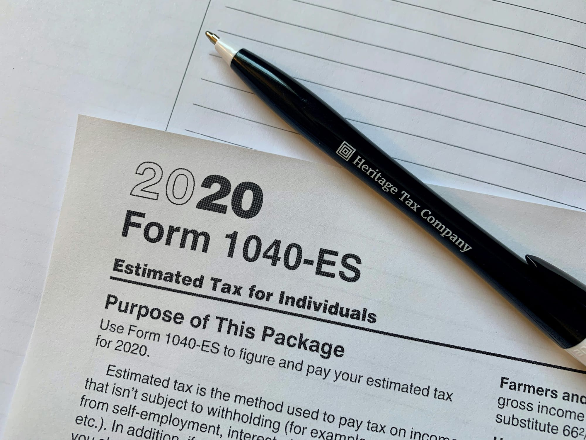

What Is a 401k and How Does It Work in 2026?
What is a 401(k) and how does it work in 2026 — contribution limits ($23k), match, vesting, Roth vs Traditional. Everything in plain English.
Z Zar · 23 Apr 2026 — 4 min read

📚 Part of our Complete Investing Guide
A 401k is the most powerful wealth-building tool available to most American workers — yet the majority of people who have one do not fully understand how it works or how to maximize it.
Here is everything you need to know.
What Is a 401k?
A 401k is an employer-sponsored retirement savings account that allows you to contribute pre-tax income — reducing your taxable income today — and invest it for growth until retirement.
The name comes from the section of the US tax code that created it: subsection 401(k) of the Internal Revenue Code.
When you contribute to a traditional 401k, the money comes out of your paycheck before taxes are calculated. If you earn $5,000/month and contribute $500 to your 401k, you only pay income tax on $4,500.
The invested money grows tax-deferred — you pay no taxes on gains, dividends, or interest until you withdraw the money in retirement.
401k Contribution Limits in 2026
The IRS sets annual limits on how much you can contribute:
Employee contribution limit: $23,500 in 2026 Catch-up contribution (age 50+): Additional $7,500, for a total of $31,000 Total limit including employer contributions: $70,000
The Employer Match — Free Money You Cannot Ignore
The employer match is the single most important feature of a 401k for most workers. It is the closest thing to free money in personal finance.
A common employer match structure: your employer matches 100% of your contributions up to 4% of your salary.
If you earn $60,000 and contribute 4% ($2,400/year), your employer adds another $2,400 — immediately doubling your contribution with zero additional cost to you.
This is a 100% instant return on your investment. No investment reliably beats this. Capturing the full employer match is the single highest-priority financial action for anyone with a 401k.
If you are not contributing enough to capture the full match, increase your contribution to that level before anything else — before building savings beyond your emergency fund, before paying extra on low-interest debt, before any other financial goal.
Traditional 401k vs Roth 401k
Many employers now offer both traditional and Roth versions of the 401k. The difference is when you pay taxes.
Traditional 401k:
- Contributions are pre-tax — reduces your taxable income today
- Growth is tax-deferred
- Withdrawals in retirement are taxed as ordinary income
- Best if you expect to be in a lower tax bracket in retirement than today
Roth 401k:
- Contributions are after-tax — no immediate tax benefit
- Growth is tax-free
- Withdrawals in retirement are completely tax-free
- Best if you expect to be in the same or higher tax bracket in retirement
For most millennials who expect their income to grow significantly, the Roth 401k often wins — you pay taxes now at lower rates and pay nothing on potentially much larger withdrawals decades later.
What to Invest In Inside Your 401k
Most 401k plans offer a limited menu of investment options chosen by your employer. The quality varies significantly between plans.
The default choice for most people: Target date fund matching your expected retirement year. If you plan to retire around 2055, choose the 2055 target date fund. It automatically adjusts allocation from aggressive stocks to conservative bonds as you approach retirement.
The Investing Foundation Every 401k Owner Needs
I Will Teach You to Be Rich
by Ramit Sethi
Covers 401k setup, employer match strategy, and how to integrate retirement accounts into your complete automated financial system.
Most people cannot max out their 401k — and that is fine. Contribute as much as you can afford, prioritizing at least enough to capture the full employer match.
The better choice if available: A combination of low-cost index funds. Look for:
- Total US stock market index fund (expense ratio under 0.10%)
- International stock index fund (expense ratio under 0.20%)
- Bond index fund (if you are within 10-15 years of retirement)
What to avoid:
- Actively managed funds with expense ratios above 0.50%
- Company stock — concentrates risk in your employer
- Funds you do not understand
The expense ratio is the most important factor. In a 401k plan, even a 0.50% difference in fees costs tens of thousands of dollars over a career.
401k Withdrawal Rules
Normal withdrawals: Begin at age 59½ without penalty. Withdrawals are taxed as ordinary income.
Required Minimum Distributions (RMDs): Starting at age 73, you must withdraw a minimum amount annually regardless of whether you need the money.
Early withdrawal penalty: Withdrawing before 59½ triggers a 10% penalty plus ordinary income tax — a total tax hit of 30-40% for most people. Avoid this at all costs.
Hardship withdrawals: Available for specific financial emergencies — medical expenses, home purchase, education, preventing foreclosure. Still subject to taxes but penalty may be waived.
401k loans: You can borrow from your 401k and repay yourself with interest. Dangerous — if you leave your job, the loan balance becomes immediately due. Avoid unless absolutely necessary.
What Happens to Your 401k When You Leave a Job
You have four options when you leave an employer:
- Leave it where it is — acceptable if the plan has good, low-cost investment options
- Roll it over to your new employer's 401k — simplifies management
- Roll it over to an IRA — usually the best option, gives you full control and access to better investment options
- Cash it out — the worst option. Triggers taxes plus 10% penalty. Never do this.
Always roll over to an IRA if your new employer's plan has poor investment options or high fees.
How to Maximize Your 401k in 2026
Priority 1: Contribute at least enough to capture the full employer match — this is non-negotiable.
Priority 2: Max your Roth IRA — $7,000 limit in 2026 — for better investment options and tax-free growth.
Priority 3: Go back and increase your 401k contribution toward the $23,500 limit as income allows.
Always: Choose low-cost index funds. Review your allocation annually.
The Bottom Line
A 401k is the foundation of retirement savings for most American workers. Capture the full employer match immediately — it is the highest guaranteed return available anywhere in personal finance.
Then choose low-cost index funds, automate your contributions, and leave it alone for decades.
The 401k is not exciting. That is precisely why it works.
A 401(k) and an IRA work best together. If you are opening an IRA too, our Roth vs Traditional IRA guide shows which one fits your situation.
📥 Free download: The 10-Step Financial Independence Checklist
The exact roadmap I followed to build my financial foundation. 11 pages, professionally designed, free with email signup — no credit card, unsubscribe anytime.
Disclosure: This post may contain affiliate links. ZarWealth may earn a commission if you sign up through our links, at no extra cost to you.o you.